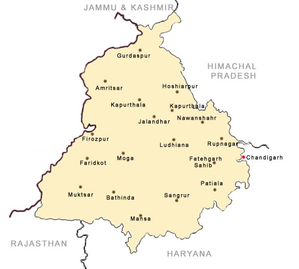

LET'S HAVE A LOOK AT THE TOUR MAP
BACK

WHERE TO VISIT , WHAT TO SEE?
- AMRITSAR
- GOLDEN TEMPLE (#MUST_VISIT_PLACE)
- JALLIANWALA BAGH (#MUST_VISIT_PLACE)
- AKAL TAKHT (#MUST_VISIT_PLACE)
- TARA TARAN SAHIB
- MAHARJA RANJIT SINGH PANORAMA
- WAGAH BORDER (#MUST_VISIT_PLACE)
- MAHARAJA RANJIT SINGH MUSEUM
- RAMBAGH GARDEN
- SUMMER PALACE OF MAHARAJA RANJIT SINGH (#MUST_VISIT_PLACE)
- HARIKE WETLAND AND BIRD SANCTUARY
- KHALSA COLLEGE
- DURGIANA TEMPLE
- BATHINDA FORT
- KAISER BAGH PARK
- CHANDIGARH
- THE ROCK GARDEN (#MUST_VISIT_PLACE)
- SUKHNA LAKE
- CHHATBIR ZOO
- ROSE GARDEN
- LE CORBUSIER CENTRE
- GOVERNMENT MUSEUM AND ART GALLERY (#MUST_VISIT_PLACE)
- SARKARIA CACTUS GARDEN
- TIMBER TRAIL (#MUST_VISIT_PLACE)
- BUTTERFLY PARK (#MUST_VISIT_PLACE)
- YADVINDER GARDEN (#MUST_VISIT_PLACE)
- GARDEN OF FRAGRANCE (#MUST_VISIT_PLACE)
- CHANDIGARH BOTANICAL GARDEN AND NATURE PARK (#MUST_VISIT_PLACE)
- MAHENDRA CHAUDHARY GARDEN AND NATURE PARK
- LEISURE VALLEY
- SHANTI KUNJ (#MUST_VISIT_PLACE)
- MORNI HILLS (#MUST_VISIT_PLACE)
- TERRACED GARDEN (#MUST_VISIT_PLACE)
- INTERNATIONAL DOLLS MUSEUM (#MUST_VISIT_PLACE)
- JALANDHAR
- IMAM NASIR MASJID (#MUST_VISIT_PLACE)
- TULSI MANDIR
- SHAHEED-E-AZAM SARDAR BHAGAT SINGH MUSEUM (#MUST_VISIT_PLACE)
- WONDERLAND THEME PARK (#MUST_VISIT_PLACE)
- DEVI TALAB MANDIR (#MUST_VISIT_PLACE)
- SHIV MANDIR
- ST. MARY'S CATHEDRAL CHURCH (#MUST_VISIT_PLACE)
- PUSHPA GUJRAL SCIENCE CITY
- COMPANY BAGH
- NIKU PARK
- RANGLA PUNJAB HAVELI
- PRITHVI'S PLANET
- SHEETLA MANDIR
- LUDHIANA
- LODHI FORT (#MUST_VISIT_PLACE)
- RURAL HERITAGE MUSEUM (#MUST_VISIT_PLACE)
- TIGER ZOO (#MUST_VISIT_PLACE)
- GURUDWARA CHARN KAMAL
- MAHARAJA RANJIT SINGH WAR MUSEUM (#MUST_VISIT_PLACE)
- PHILLAUR FORT
- NEHRU ROSE GARDEN
- DEER PARK
- PATIALA
- QILA MUBARAK COMPLEX
- MOTI BAGH PALACE (#MUST_VISIT_PLACE)
- BANUR
- SAMANA
- BARADARI GARDEN
- SHEESH MAHAL (#MUST_VISIT_PLACE)
- DARBAR HALL (#MUST_VISIT_PLACE)
- BIR MOTI BAGH SANCTUARY
- LACHMAN JHOOLA (#MUST_VISIT_PLACE)
- KALI TEMPLE(MALL ROAD)
- BHATINDA
- BHATINDA FORT (#MUST_VISIT_PLACE)
- QILA MUBARAK (#MUST_VISIT_PLACE)
- ROSE GARDEN
- BHATINDA LAKE
- BHATINDA ZOOLOGICAL PARK (#MUST_VISIT_PLACE)
- LAKHI JUNGLE
- BIR TALAB ZOO
- CHETAK PARK
- DHOBI BAZAR
- PATHANKOT
- MUKTESHWAR TEMPLE
- ASHAPURNIN MANDIR
- KATHGARH TEMPLE
- NURPUR TEMPLE
- RANJIT SINGH DAM (#MUST_VISIT_PLACE)
- HYDRAULIC RESEARCH STATION (#MUST_VISIT_PLACE)
- SHAHPURKANDI FORT (#MUST_VISIT_PLACE)
- KUPURTHALA
- THE JAGATJIT PALACE (#MUST_VISIT_PLACE)
- JAGATJIT CLUB
- ELYSEE PALACE (#MUST_VISIT_PLACE)
- PANJ MANDIR
- KANJLI WETLAND
- SHALIMAR GARDEN (#MUST_VISIT_PLACE)
- NIHAL PALACE
- STATE GURUDWARA
- MOORISH MOSQUE
- MOHALI
- ROSE GARDEN (#MUST_VISIT_PLACE)
- SILVI PARK
- MATAUR LAKE
- ROCK GARDEN (#MUST_VISIT_PLACE)
- SUKHNA LAKE
- SUKHNA WILDLIFE SANCTUARY
- GURUDWARA AMB SAHIB
- MANSA DEVI TEMPLE
- GURUDWARA NADA SAHIB
- PUNJAB CRICKET ASSOCIATION STADIUM
- ROPAR
- ANANDPUR SAHIB (#MUST_VISIT_PLACE)
- CHAMKAUR SAHIB
- BHAKRA NANGAL DAM (#MUST_VISIT_PLACE)
- ROPAR WETLAND (#MUST_VISIT_PLACE)
- GURUDWARA PARIVAR VICHHORA SAHIB
- GURUDWARA BHATTA SAHIB
- JATESHWAR MAHADEV TEMPLE